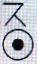

日本は文化の組み立て工場
明主様御教え 「日本は文化の組立工場」 （昭和28年2月11日）
「日本人でありながら、日本の国柄とその使命を知っている人はほとんどないようである。
しかし終戦前まではある派の人は、一人よがりの国粋的理論を説いたのはいいが、
その説を利用して、戦争当時軍部方面などは頻（しき）りにそれを唱え、国民を煽り立てる道具にしたのは衆知の通りであるが、これが相当マイナスとなった事は敗戦によってよく分ったのである。
ところが今ここに私の言わんとするところは、それらとは根本的に異うので、その心算（つもり）で読んで貰いたいのである。
これについては、私は以前アメリカのフォードの自動車会社のやり方を何かの本で見て感心させられた事がある。
それは同会社は部分品専門の小会社を多く作りそこからその会社の製品を運ばせ、本社へ集中させるのである。
すると本社ではそれぞれの部分品を組立て、完全な自動車として売出すという方法である。
ちょうどそれと同じような仕事をする国が、日本であると思うのである。
つまり各国々の特長を採入れ組立て、綜合的完全な文化として、世界へ売出すようなものである。
それが日本という国の使命であるから、日本には著しい独自の文化はないのである。
たとえてみればアメリカの機械文化、民主政治、進歩主義は固より、英国の保守的堅実な政治や穏健なる社会主義、国王と人民との美わしい関係等もそうだが、
その他としては仏蘭西（フランス）の絵画、文学、音楽等の特殊な自由主義的芸術や、独逸（ドイツ）の逞（たくま）しい進取的力の文化、伊太利（イタリア）の宗教や古典芸術、中国の古代文化、特に漢字、漢文、儒学、印度（インド）の仏教等、各国文化の特長はことごとく日本に採入れられている。
それらを見た短見者流の日本人は、昔から日本は真似の好きな国、模倣の天才などといっているのは、深い意味を知らないからである。
そのため外国の卓越した文化を見てはたちまち崇拝すると共に、日本を劣等視するという悪い癖がある。
この表われは終戦後何もかもアメリカのものならいいと思った事によっても明らかである。
私はこの事をたとえるに今一つの好い資料がある。
それは日本は日の本であり、太陽の国である。太陽が七色の光線を回転すると白一色となる。
この意味を考えてもなるほどと思うであろう。
これを当嵌（は）めてみると、現在の日本は各国の色を採入れてはあるが、それを回転するまでに至っていないのである。
ではなぜ回転出来ないかというと、これは車と同様であって、軸がまだ出来ていないからである。
軸とは無論☉（ス。○の中にチョン）である。
では☉はいつどこに現われるかというと、これこそいつもいう通り我 メシヤ教であって、私がいつもいう☉の文化というのは、この事も一つの重要な主目である。
もっとも☉の文化が生まれたばかりの今日、段々時が熟して完全な心棒になった時廻転し始めるので、初めてそこで白色の太陽世界となり、日本から輝き始まるのである。
これも私のいう昼間の世界の始まりであり、東方の光の顕現でもあるので、これから追々分るであろう。
次に今一つ言いたい事がある。それは右の意味が分らないため、自分の国の色に世界を染めようとしている国のある事で、これは何程やっても結局は骨折損の草疲（くたびれ）儲けとなるから考えてみて貰いたいのである。」
明主様御講話 「日本は組み立て工場」 （昭和27年6月27日）
「そんなようなわけで、今に外国の偉い人やなにかも、必ずここに来るだろうと思ってます。
それで神様の経綸は型でやるということを言ってますが、
この美術館というものは箱根の山の上・・・山の上というのが東と西のちょうど間です。
これは先にもよく言いましたが、これを今から言えば、日本は世界中の型になっているんです。
これは講和前ですと、そういうようなことを非常にやかましかったが、講和になってみれば差し支えないから言いますが、日本人は世界中の型なんです。
これは、一番分かることは、日本人というのは、世界のどこの文化でも咀嚼（そしゃく）できるんです。
世界に他にこういう国民はないです。
日本人は、西洋の文化でも中国の文化でも南洋の文化でも、なんでも呑み込んで、自分のものにできるんです。
この点をよくみると、日本人というものは特殊の人種ということが分かるんです。
仮に文学や音楽でも、東洋人でありながら中国人には解らないそうです。
中国人にはないそうです。特に西洋音楽は解らないそうです。
ところが日本人は、西洋音楽でも今では西洋人に負けないくらいに偉い音楽家ができているんです。
それから絵でもそうです。ピカソやマチスの、今は・・・まねですが、
とにかく今度なんかも四十点かいろんな油絵を出品しましたが、そのくらいそういったものが日本人は偉いんです。
ですから、私は前にこういうことを言ったことがあるんです。
日本は組み立て工場とも言える。
つまり、自動車やなにかの・・・アメリカの大工場のフォードなんかそうですが、
各専門専門の会社を下に持っていて、車は車、発動機は発動機・・・そういったように部分的の会社を持っていて、
それが一遍にフォードの本社に集まって組み立てて一つの自動車として完全なものにする。
それと同じで、日本は世界中のいろんな文化を取り入れて、それを組み立てて本当に実用になるというようなものを作る。
それが日本の使命だと言ったことがあるが、そういうようなわけで日本人というものは、世界の見本になるべきです。
そうすると日本という国が、やはり見本になるんです。
そこで神様は日本の中心・・・中心というのは箱根の山なんです。神山ですね。
これが中心です。神山の向こうが西で、こっちが東です。
そうなっている。
つまり関西、関東になっている。そこでこの美術館というのは天国の型です。
天国ということは、つまり芸術です。天国の表徴は芸術なんです。
それを造ったということは、これがだんだん広がって世界的になるにつれて、ミロクの世になるんです。
つまり丸（○）の丸（○）の中心です。これになる。
だからただ単に美術館としてでなく、そういったような非常に深い経綸上のものなんです。
だからミロクの世のポチ（丶）ができたようなものです。
早く良いものができたということは、その意味で神様がだんだんそれをやる。
そのために品物なんかでもほとんど神様が寄せたんです。
いつでも道具屋が「こういうものなんか売り物に出るものでないが、不思議ですね」と言っている。
ですから私は「変ですね」と言って腹の中で笑っている。
そんなようなわけですからトントン拍子に行ったんです。
で、神様の型ということはおもしろいので、ひとりそういったようなものばかりでなく、人間がそうなっている。
米国人の型、英国人の型、中国人の型。中にはアフリカ人の型もあるわけです。
そういう人の一人ひとりが信者になって救われると、それが広がって・・・そういった型になるわけなんです。
それがずっと広がって一国になるわけです。
で、良くみるとそれがたくさんあります・・・それは言うわけにはいかない。
それも、喜ぶ人ばかりでなくて、中には・・・君はアフリカ人の型だというと、どうもね。
中には共産党の型も、あるいはギャングの型もあるかもしれない。
そんなように型でやって行くんです。
私がいろいろと世界中のことを知ったということは、型で知らされているんです。
これも大本教のお筆先にあります。
「大本は世界の型であるから、この中を見て居ったら世界の凡ての事は良く分るぞよ」というお筆先があるが、それはまったく間違っていないです。
ですから大本教の中に世界の型がいろいろありました。
それを大体神様からいろいろ知らされてましたから、そこで世界の将来ということが大体分かるんです。
そういうこともこれから書き始めてますが、
そういった一つの、神様の経綸上の神秘についてですが、書くことが多いので書くのが間に合わないくらいです。
そんなようなわけですから、信仰でも自分一人ではないんです。
何万人何十万人の、自分は代表者になっているから、自分をそう軽く見ることはできないです。
そうかといって、俺はどこの国の型なんて言うと、うぬぼれが出ますからね。
で、地上天国になるのに一番邪魔しているのは、なんだと言うと薬なんです。
これをあんまり知らせると、いろんな反対や被害があるから今まであんまり言わなかったが、それもいずれ知らせなければならない。」
明主様御講話 「日本には各国の文化が入っている」 （昭和27年11月7日）
「（前半省略） そういうようなわけで、私は先に大本教にいた時分に、ある所で講演した時にこういう話をしたことがあります。
その時分にフォードの自動車会社が方々に支社を作って、
車は車、エンジンはエンジン、ボディーはボディーと専門的にこしらえる工場を持って、そこから本社の方に送って本社の方で組み立てて、完全な自動車として売り出すという組織になってますが、
日本はちょうどそういったフォード会社と同じようなもので、方々でできた文化を組み立てて、本当に使い道になるようにして、そうして人間がそのお蔭をこうむるというように考えれば良く分かる。
ですから日本には中国文化も西洋文化も、各国の文化がみんな入っている。
それをみんな組み立てて本当のものにして、世界中の人間の役に立てるというように考えると一番良く分かる、
と言って講演したことがありますが、それが日本の使命なのです。
それから日本は太陽の国ですからして、太陽の光は白です。
白ですが、ふつう太陽の光は七色といって、道具があって回転すると白になりますが、あれと同じです。
日本の天皇の「皇」という「すべる」という字は、白の王と書いてありますが、あれが日本を「すべる」という意味なのですが、字も実によくできているのです。
「皇」の字は白の王としてありますが、白というのは「ノ」の字が天から天降ったという形です。
そうして日ですから、つまり「ス」が天から下がった。
それで王というのは日月地を貫くというのですから、あの字一字でもそれだけの意味が含まれている。
そこに各国のそれぞれの色がありますからその色を日本で総合した総合文化、そうして白にする。
だから今まで思想でも宗教でもなんでも、その国の特有の色があるのです。
ところが日本はそういう色を総合して、白にして、それがつまり本当のミロクの代の文化になるわけです。
そういう根本を知っていれば、日本という国はいかに尊い、たいした国かということが分かりますが、
それを知らないから例の劣等感という、外国の方が上だ、どうも日本人の方が劣っているように思いたがるのです。
それは根本を知らないからで、その根本を私はだんだん知らせようと思ってます。
ところが講和前は、日本の優秀性なんかを言うと、アメリカがにらみますから言うことはできない。
そうかといって天皇制時代にはそういうことは言えない。うっかり言うとたいへんなことになります。
ようやく今日はそういうことが言えるようになったのです。
こういう時節というものも、やっぱり神様がこしらえたのです。
日本人がそういうことをだんだん知ると、劣等感はなくなりますし、自尊心が起ってきます。
日本人は立派な使命を持っている、日本が世界を救うのだ、という気持ちだけでも、
日本人は汚いことや悪いことはよほどできにくくなります。
やっぱり劣等感なんかがあるために、悪いことやなにかをする。
つまり政治家などが汚い闇的なことを好んでするということは、やはり自分を安っぽいものに思っているのです。
ですから人間はうぬぼれてはいけないが、自分の導いことと大きな使命を持っていることを知るということが一番立派な人間になるのです。
ですから今度の選挙も、アメリカは公明選挙ということは言いません。公明選挙ということは言う必要がないからです。
別に、民主党の方ではだいぶ買収したという話は聞いたことはぜんぜんないでしょう。
ところが日本は今年が今までの選挙違反では一番多かった。
ところが今年は公明選挙と言っているが、かえって公明選挙ということは言わない方が良い。
というのは逆効果になっている。
というのは日本人というのは、今言う自信がない、自尊心がないのです。その点が一番なわけです。
そうかといって先の戦争の時の軍部などは大いに自尊心はあったのです。
その自尊心が違っていたのです。人を殺す方の自尊心だったのです。
悪い意味の自尊心です。これを良い意味の自尊心に変えるわけです。
ですからメシヤ教は大いにそういった自尊心を知らせたいと思っているのです。
そういういろんなことも、これからだんだん本当のことが言えます。
ですからあらゆるものを良く外国と比べてみると、日本という国がいかに尊い国かということがだんだん分かってきます。」
明主様御講話 「日本人くらい多方面に能力がある国民はない」 （昭和27年5月17日）
「この中に日本は白の色ということが書いてあるが、これはおもしろいんですよ。
日本の天皇の皇の字ですね。
それから、日本は「天皇（すめらぎ）」の国とか、「皇（すめら）」とかいうことは、各々白の下に王と書いてありますね。
日本は白の国ということは・・・太陽の光線の色をグルグルまわすと、白になりますね。
あれと同じ理屈です。
だから日本は各国の色を全部取り入れるんです。
そこで日本の文化をみれば良く分かります。
日本くらい各国の特徴を取り入れた国はないですからね。
世界中の人種で、各国の文化を理解できるのは日本人だけだ。
これは外国の識者でも、そういう説を唱えているのもあるようですがね。
たとえて言えば、同じ東洋人でも、西洋音楽は日本人しか解らない。
中国・・・中国人には解らない。勿論朝鮮人もそうです。
日本だけです。それから外人・・・白人種の方は、いろいろな方面には随分頭が良いんですが、
日本の芸術・・・それは解らないですね。近ごろだいぶ歌や俳句を研究しているようですが、なかなか解らない。
ところが日本人は外国の詩でも文学でも容易に理解できるんです。
だから日本人くらい多方面に能力がある国民はないです。
そこで日本は日（ひ）の本（もと）ですね。
太陽の国というのはそういうわけです。
講和以前ですと、あんまりこういうことを言うと具合が悪いですが、もう言っても良いから言うんですが、
そんなようなわけでメシヤ教にもそういうことが当てはまるんです。
また今までの宗教でも、メシヤ教くらい、いろんなことをやる宗教はないです。
たいてい今までの宗教は、教えとか・・・まあ教えが根本です。
美術館を造るとか、農業を改造するとか、あるいは医学を排して病気を治すとか、お祭りの余興にいろんな芸能人にいろんなことをやらせるとか、メシヤ教という名前からしてキリスト教向きであって、そうかというと観音様があったり御神体があったり、仏教的で・・・実に多方面にわたっているんですね。
これは今いう太陽の白の働きですね。
ですから昼間の世界ということは、白の世界ですからね。
それでいろいろな色を取り入れて、コントロールして白色ということになる。
それで私は寸鉄に白光生（びゃっこうせい）という名前をつけたのはそういう意味からです。
そういうことを知って日本の国をみると一番良く分かるんですね。
だから日本にはいろんなものがあるんです。
だから日本の思想にはアメリカの思想もあるし、ソ連の共産主義もあるし、イギリス、ドイツーいろんなー各国の思想があります。
またそういったふうの色の人間も日本人にはあります。
東洋でもいろいろ・・・中国、朝鮮、南洋・・・そういうのがあります。
実におもしろいんです。
それで、日本にはすべてのものの種類が一番多いですからね。
食物でも、日本くらい魚の種類が多い国はないそうですからね。
そういうことを言うときりがないのですが、今言ったような・・・日本は白ということはそういう意味です。
そういうことをお話したんです。」
明主様御講話 「日本人は世界のどこの文化でも咀嚼できる」 （昭和27年6月27日）
「そんなようなわけで、今に外国の偉い人やなにかも、必ずここ（註 箱根美術館）に来るだろうと思ってます。
それで神様の経綸は型でやるということを言ってますが、この美術館というものは箱根の山の上・・・山の上というのが東と西のちょうど間です。
これは先にもよく言いましたが、これを今から言えば、日本は世界中の型になっているんです。
これは講和前ですと、そういうようなことを非常にやかましかったが、講和になってみれば差し支えないから言いますが、日本人は世界中の型なんです。
これは、一番分かることは、日本人というのは、世界のどこの文化でも咀嚼（そしゃく）できるんです。
世界に他にこういう国民はないです。
日本人は、西洋の文化でも中国の文化でも南洋の文化でも、なんでも呑み込んで、自分のものにできるんです。
この点をよくみると、日本人というものは特殊の人種ということが分かるんです。
仮に文学や音楽でも、東洋人でありながら中国人には解らないそうです。
中国人にはないそうです。特に西洋音楽は解らないそうです。
ところが日本人は、西洋音楽でも今では西洋人に負けないくらいに偉い音楽家ができているんです。
それから絵でもそうです。ピカソやマチスの、今は・・・まねですが、とにかく今度なんかも四十点かいろんな油絵を出品しましたが、そのくらいそういったものが日本人は偉いんです。
ですから、私は前にこういうことを言ったことがあるんです。
日本は組み立て工場とも言える。
つまり、自動車やなにかの・・・アメリカの大工場のフォードなんかそうですが、
各専門専門の会社を下に持っていて、車は車、発動機は発動機・・・そういったように部分的の会社を持っていて、それが一遍にフォードの本社に集まって組み立てて一つの自動車として完全なものにする。
それと同じで、日本は世界中のいろんな文化を取り入れて、それを組み立てて本当に実用になるというようなものを作る。
それが日本の使命だと言ったことがあるが、そういうようなわけで日本人というものは、世界の見本になるべきです。
そうすると日本という国が、やはり見本になるんです。
そこで神様は日本の中心・・・中心というのは箱根の山なんです。
神山ですね。これが中心です。神山の向こうが西で、こっちが東です。
そうなっている。つまり関西、関東になっている。
そこでこの美術館というのは天国の型です。天国ということは、つまり芸術です。
天国の表徴は芸術なんです。それを造ったということは、これがだんだん広がって世界的になるにつれて、ミロクの世になるんです。
つまり丸の丸の中心です。
これになる。だからただ単に美術館としてでなく、そういったような非常に深い経綸上のものなんです。
だからミロクの世のポチができたようなものです。
早く良いものができたということは、その意味で神様がだんだんそれをやる。
そのために品物なんかでもほとんど神様が寄せたんです。
いつでも道具屋が「こういうものなんか売り物に出るものでないが、不思議ですね」と言っている。
ですから私は「変ですね」と言って腹の中で笑っている。
そんなようなわけですからトントン拍子に行ったんです。
で、神様の型ということはおもしろいので、ひとりそういったようなものばかりでなく、人間がそうなっている。
米国人の型、英国人の型、中国人の型。
中にはアフリカ人の型もあるわけです。
そういう人の一人ひとりが信者になって救われると、それが広がって・・・そういった型になるわけなんです。
それがずっと広がって一国になるわけです。で、良くみるとそれがたくさんあります・・・それは言うわけにはいかない。
それも、喜ぶ人ばかりでなくて、中には・・・君はアフリカ人の型だというと、どうもね。
中には共産党の型も、あるいはギャングの型もあるかもしれない。
そんなように型でやって行くんです。
私がいろいろと世界中のことを知ったということは、型で知らされているんです。
これも大本教のお筆先にあります。
「大本は世界の型であるから、この中を見て居ったら世界の凡ての事は良く分るぞよ」というお筆先があるが、それはまったく間違っていないです。
ですから大本教の中に世界の型がいろいろありました。
それを大体神様からいろいろ知らされてましたから、そこで世界の将来ということが大体分かるんです。
そういうこともこれから書き始めてますが、そういった・・・一つの、神様の経綸上の神秘についてですが、書くことが多いので書くのが間に合わないくらいです。
そんなようなわけですから、信仰でも自分一人ではないんです。
何万人何十万人の、自分は代表者になっているから、自分をそう軽く見ることはできないです。
そうかといって、俺はどこの国の型なんて言うと、うぬぼれが出ますからね。
で、地上天国になるのに一番邪魔しているのは、なんだと言うと薬なんです。
これをあんまり知らせると、いろんな反対や被害があるから今まであんまり言わなかったが、それもいずれ知らせなければならない。」
明主様御垂示 「日本は全世界のあらゆる文化を取り入れている」 （昭和26年6月2日）
信者の質問
「御論文をいただきますと、日本文化の特異性のところに、日本人の特長、使命といったものを、解りやすく説いていただいてあります。
平和的芸術国家でなくてはならない。そういった方面に伸びると言うお言葉をいただき、私なりに感ずるのでございますが、
日本の場合は客観的なものとお話いただいたのでございますが、あれだけの中国芸術ができますまでの関係を・・・」
明主様御垂示
「日本、朝鮮、中国。これで三位一体になる。
日本が火で、朝鮮が月で、中国が土になる。
五六七というと、日本が五で、朝鮮が六で、中国が七になる。そのくらい密接なものです。
だから、中国芸術は立派なものができるのはあたりまえです。
三すくみというのがあるが、あれはおもしろい。
日本が蛇ですね。朝鮮がなめくじ。中国が蛙。
日本は龍神の国です。日本の国の形は龍の形ですね。
もっと徹底したいが、まだ講和にならないですからね、日本人の優秀性をアメリカでは非常に嫌うんです。
だから、あんまり深く言えない。日本人は非常に優秀性があるんですがね。
戦争に関したことじゃない、平和的なことです。
だから、そうたいして悪くはないんですが、やっぱり誤解されますからね。
平和的に優秀性ということの平和的を取って、優秀性だけを言われたりすると誤解されますから。
そういうこともアメリカ辺りで、知っている人もありますね。
日本は不思議な国だ、とね。
全世界のあらゆる文化を取り入れていますからね。
日本くらい、そういった・・・日常生活だって、日本人は洋食も食えば、中国料理も食えば、お茶漬けに香の物で食うし・・・中国人や外国人は、日本人のように豊富でない。
しかし日本には消化できる。
音楽でも、芸術でも・・・中国人は油絵が上手なのはないでしょう。
それから、西洋の音楽はないですからね。
だから、西洋人は不思議だと言っているそうです。
中国人には理解できなくても、日本人には理解できる。
中国人にはベートーベンなんか聞く人はないそうです。
日本人は漢字も書けば、横文字も書けば、仮名も書く。
中国人は漢字と横文字はやるでしょうが、仮名は使わないでしょう。
だから、日本人は不思議な民族ですね。
昔は、大本教で宣伝したことがあります。
日本はデパートだとね。組立工場だ。
つまり、それほど日本人はいろんなものが、豊富なんですね。
何でも食う。何でも味が解る。そういった国民性ですね。
ところが、そいつが夜の世界の間は邪神が勢力を得ていたから、それで戦争を大いに奨励した。
ところが本来そうではない。
戦争で、コリゴリさせて二度としないようにしてしまった・・・神様がね。それが、こんどの敗戦ですね。
それで始めて、日本人としての天職をやるということになる。
日本が負けたということはたいへんなことです。八月十五日は、大いに祝わなくてはならない。
とても想像もつかないようなたいへんなことがある。
ちょうど、時期がそういうふうになって来たんですね。
ですから、もう霊界のほうじゃ、ドンドン地上天国ができつつあるんです。
しかし長い間の罪穢れが溜まっているから、掃除をされる。
その掃除を、神様がどういうふうにされるかということが問題です。
建設のほうも肝腎だから、差し障りがないように掃除される。そういうところが深遠微妙です。」
明主様「救世会館」の構想と「日本の使命」について大いに語られる （昭和28年1月28日発行）
竹内四郎氏ほか二氏との御対談(一)
日本の使命
明主様御発言
「もう一つはこういうことも言いたいのです。
講和以前には言いませんでしたが、民族では日本人が一番優秀なのです。
これは事実を見れば分かりますが、日本人くらい世界中の文化を吸収できる国民はありません。
以前にちょっとした小さな講演会で話したことがありますが、日本は自動車の組み立て工場と思えばいい。
フォードでは部分品を各工場に作らせて、それを本社に集めてきて組み立てて売り出すということですが、それがちょうど日本だと思います。
アメリカの文化、イギリス、ドイツの文化、東洋でも、中国、インドの文化などがみんなはいってきて、それを組み立てて立派な文化をつくるというのが、
日本の使命だと思います。その使命を果たす民族が日本人とすると、日本人が一番偉いということになります。
ところが今までは、各国の部分的の文化を見て感心していたのです。
それは機械的なものはアメリカにはとてもかないませんし、また英国の社会主義を見ては感心するとか、フランスの芸術面における絵画、文学に頭を下げていたのです。
今後はそういう各国の特長をとり入れて、それを総合した理想的な文化をつくるのが日本人なのです。
それはこれからそうなるのです。ですから今までの日本は、その準備行為でしょう。
そうして第三次戦争がすんでから、急にそうなってくるでしょう。
日本人の素質は将来そういう使命があるのです。また日本人くらい各国の文化を消化できる国民はありません。
だいたい、東洋というのは精神文化で、西洋は物質文化です。
東洋は経で西洋は経です。
それを結ぶ時期はいま言った通りで、その結ぶ国は日本です。
それで日本における結びはメシヤ教がやるのです。
メシヤ教のバッジは十の字なのです。
この赤い丸は日本を象徴し黄色いのは黄金時代というわけなのです。
なにしろ日本人は劣等感が非常にありますからね。」
竹内氏の発言
「終戦後は特にひどいですね。」
明主様御発言
「そうです。だから「アメリカを救う」という本を出したのは、その狙いもあります。
「アメリカを救う」というのですから、アッチより上の立場になるのですから、少しは刺激するだろうと思います。
アメリカは結核が非常に多いのですが、菌に対することもすっかり書いてあります。
菌が伝染するから殺さなければならない、というのが医学の建前ですが、われわれから言うと幼稚なものです。
それは菌が伝染するとしても、その最初の菌は忽然としてできたものではなく、発生源というものがあるはずです。
それが医学では分からないのです。
それで黴菌というものはどこで発生して、どういうように進むかという経路を書いてあります。」
竹内氏の発言
「これからは、あなたのような方に考えを出していただいて、そういうことでも大いに日本に呼び掛けていただきたいですね。」
明主様御発言
「そのつもりでいます。」
竹内氏の発言
「そうしていただきますと、日本の国民も自信を持ってきますから、たいへんいいことですね。」
明主様御発言
「日本は、社会がすっかり汚れきっているので、これを取って磨けばたいしたものです。
ちょうどダイヤモンドのようなもので、八角形にでも切って磨けばすばらしいものになりますが、川から出したままでは駄目ですからね。」
明主様御講義 「日本と外国の使命」 （昭和10年9月5日発行）
「今までの称えた日本精心は神の日本精神ではない。
バラモンから出た所の精神であった。
真の日本精神は大調和の精神である。常軌を逸した様な事や、人の目にいかにも善の様に見えても、皆日本魂と今まで言ったのは違うのだ。
一方に偏するのは日本精神ではない。
日本は太陽の国である。太陽は白色であって、白は色々な色になる。
色々な色とは各国の事である。独逸（ドイツ）がナチス、伊太利（イタリア）がファッショ、露西亜（ロシア）が共産主義と言った様な訳である。
日本はこの各国の色を取入れて白く光るのである。
ファッショでも共産主義でも一色だけでは駄目である。
英国は代議政体である。英国は紫である。
米国は黄、伊太利は黒、仏は褐色、露は赤色と云う様なもので、日本は色々なものを取り入れて立派なものに仕上げるのである。
日本は求心的で、☉である。富士山で言うと真中が日本である。
それは頂上から見れば

である。
本、

西、横から見れば極東又東である。麓は西となる。
日本の文化は求心的であり、西から出来て来たものは荒ごなしで仕上げがしてないのである。
これは遠心的であって、仕上げて西へ又逆輸出するのが日本の今後の仕事である。
今までの状態は西より東へ来たが、これが九分九厘である。
今度は東から西へ太陽の光りで一遍に照して終うのである。」 （「観音講座 第六講座」より）
明主様御教え 「東京が中心」 （昭和10年9月15日発行）
「前項に述べた日本が中心である。という事について、疑う人があるかも知れない、それは 第一日本は世界の極東になるではないかと、それについて説明してみる。
たとえてみれば、富士山の頂をみればいい、飛行機に乗って、富士山の上から見下せば、頂は真中になっている☉（註 ○にチョン）の形である、
しかし横からみれば、頂は端になっている。裾野を西とすれば、頂は極東になっている理である。
今日までの、あらゆる宗教は、西方に生れている。
仏教も、基督（キリスト）教も、回々（フイフイ）教も、儒教も、道教も婆羅門（バラモン）教も、猶太（ユダヤ）教も、又日本国内においても、その通りである。
天理教も、金光教も、大本教も、人の道も、仏立講（ぶつりゅうこう）も、生長の家も皆そうである。ちょうど文化と同じ様にである。
西から、いろいろの種類の宗教や文化が東の中心へ集中されたのは、富士山の裾野から頂へ、沢山の人が登って来るような訳であった。
求心的であった、そうして、その集ったものを綜合し、コントロールして、完全無欠の文化として、遠心的に、全地球へ向って、放射するのである。」 （「病貧争絶無の世界を造る観音運動とは何？」より）